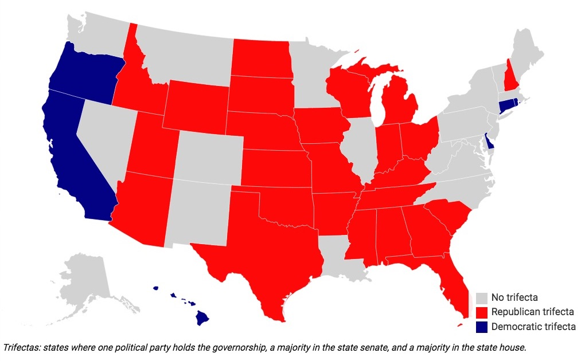

2017-02-06 08:00
I have done the unthinkable. I’ve joined the Democratic Party.
It was a painful decision because the party – long long ago a friend of working people – has abandoned its principles and, as Robert Reich writes, its only real friend right now is money.
Plus, I had to look in the mirror. We now live in a world in which no one can afford to remain a political independent or a purist. And as one Portland, Oregon, activist puts it – “you have to vote in the primary because that’s when you get to vote for who you want; in the general election in November you get to vote for who the party wants.” The parties have had their say far too long.
I’ve also joined Our Revolution, a group with a #DemEnter strategy – join the party and reform it. Or from Hillary and Bill’s perspective – we’re coming for your party.
And it is their party. At the moment.
But let’s be honest. The Democratic Party is hollowed-out roadkill, it’s vital juices seeping into the breakdown lane. It’s a tenement in foreclosure. It’s a patient on life-support. Not only the working class and rust belt states, but state parties have been victims of the DNC’s neglect. Below is a picture of the balance of political power in the United States. Red and blue trifectas indicate states where a single party has control of all three branches of government. Read Robert Reich again for the gruesome numbers. And note that Massachusetts does not number among the strongest of the Blue States.

I have an unsubstantiated theory – and I hope a political scientist will set me straight – that third parties live in political ecosystems and exist due to the stabiliity of their more mainstream cousins. Especially in nations where Duverger’s “Law” applies. There are both “left” and “right” ecosystems. Without the Republican Party Libertarians would have had nothing from which to steal six million votes. Without the Democratic Party, the Greens would be substantially weaker. Look at the blue on the map above and then do a bit of research – and you’ll find these are precisely the states where the Green Party is strongest.
So if we want stronger Green Parties – and Working Families and Socialist caucuses and progressive alliances – elsewhere in the nation, an argument can be made for attaching paddles to the flatlined Democratic Party and pumping a couple thousand volts into its chest. If the procedure succeeds we may discover the party actually has a heart. And not only the patient himself but his close relatives will be saved.
Is there anyone who would like to join me in creating a chapter of Our Revolution in New Bedford / Dartmouth / Fairhaven?
We’ve had a few weeks to mourn. It’s time to organize.